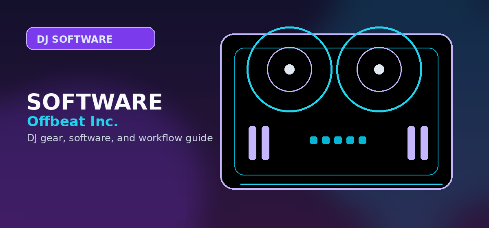

Best Free Music Production Software 2026
Best free music production software 2026: GarageBand, LMMS, Cakewalk, Audacity, BandLab tested with real feature limits. Find the free DAW for your workflow.

Disclosure: This page uses affiliate links. We may earn a commission at no extra cost to you. Full disclosure →
Seven free DAWs tested for feature completeness, plugin support, and export options. 'Free' is defined strictly: no trial period, no credit card, no watermarks. Each entry lists exactly what the free version includes and what it locks behind paywall.
Free DAW Comparison
| DAW | OS | Tracks | VST Support | Export | Catch |
|---|---|---|---|---|---|
| GarageBand Top Pick | Mac/iOS only | Unlimited | AU only | MP3/WAV/AIFF | Mac/iOS only |
| LMMS | Win/Mac/Linux | Unlimited | VST2/3 | WAV/OGG/FLAC | No audio recording |
| Cakewalk by BandLab | Windows only | Unlimited | VST2/3/DX | MP3/WAV/WMA | Windows only |
| Audacity | Win/Mac/Linux | Unlimited | Limited | MP3/WAV/FLAC | No MIDI, no VST3 |
| BandLab | Browser/iOS/Android | Unlimited | None | MP3/WAV | Browser-based, no VST |
| Tracktion T7 | Win/Mac/Linux | Unlimited | VST2/3 | WAV/MP3 | Old UI, limited templates |
GarageBand — Best Free DAW (Mac/iOS)
GarageBand is free on every Mac and iPhone. It includes 3,600+ royalty-free loops, 28 virtual instrument plugins (drums, piano, guitar amps), and records up to 255 audio/MIDI tracks. Upgrade path: Logic Pro ($199 one-time) uses identical project files — every GarageBand project opens in Logic with no conversion. The iOS version syncs via iCloud. Main limit: Mac/iOS only, no Windows.
Cakewalk by BandLab — Best Free DAW (Windows)
Cakewalk was sold to BandLab in 2018 after Gibson shut it down, then released free. It's a professional DAW: ProChannel console emulation, unlimited tracks, 64-bit double precision audio engine, and full VST3 support. Available only on Windows 10/11. BandLab's free cloud services (backup, collaboration) are optional extras.
LMMS — Best Free Cross-Platform DAW
LMMS runs on Windows, macOS, and Linux with no account or registration required. Built-in synths include ZynAddSubFX (complex subtractive/additive synthesis) and BitInvader. Main limitation: no live audio recording — LMMS is pattern/MIDI-only. This makes it ideal for electronic music production but unsuitable for recording vocals or live instruments.
Free software verdict: GarageBand (Mac) is unbeatable at the free tier -- professional quality, Apple Silicon native, full instrument library. Cross-platform free options: Cakewalk (Windows) and LMMS (all platforms) both support professional production and release without any software cost. Search beginner MIDI keyboard controllers on Amazon →
Shop on Amazon
Pair free production software with MIDI hardware — see Amazon's selection.
Full Comparison Table
Use this reference table to compare all the options covered in this guide at a glance:
| Consideration | Entry-Level Options | Mid-Range Options | Professional Options |
|---|---|---|---|
| Typical price range | Under $150 | $150 — $400 | $400+ |
| Best for | Absolute beginners; casual use | Serious hobbyists; semi-pro | Working professionals; touring DJs |
| Build quality | Plastic chassis, standard jogs | Metal components, improved jogs | Club-grade construction |
| Software included | Lite versions only | Full versions included | Full + pro features activated |
| Resale value | Low | Moderate | High (holds value well) |
For most beginners reading this guide, the mid-range tier represents the best value. Entry-level gear is often outgrown within 6 months, while professional gear has capabilities that may go unused for years. Put the savings toward music, lessons, or a better audio interface instead.
What to Buy First vs What to Wait On
- Buy first: Controller + headphones — these are the core tools where quality directly affects the learning experience
- Can wait: Mixer upgrades, USB drives, custom cartridges — these matter more once you have core skills developed
- Rent before buying: PA speakers for mobile gigs — rental makes more sense than purchase until you have 10+ events booked
- Skip entirely (for most): Standalone media players (CDJs) — software-based workflow is professional-grade and significantly cheaper
Additional Resources and Decision Checklist
Before making your final selection, work through this checklist to ensure you have covered the key considerations specific to this category:
- Verify system requirements before downloading — minimum RAM, disk space, and OS version requirements are often listed conservatively
- Check for educational pricing if you are a student — most major platforms offer 40-60% discounts with a valid student email
- Look for annual subscription deals during Black Friday, Cyber Monday, and January sales — prices frequently drop 40-50%
- Trial the mobile companion app if one exists — seamless mobile-to-desktop handoff can significantly improve your production workflow
- Check the plugin format compatibility (VST2, VST3, AU, AAX) against your existing plugin library before committing
- Search for user-created template packs for your genre — starting from a well-organised template saves dozens of setup hours
- Read the latest update changelog carefully — some major version updates introduce breaking changes to existing project files
- Check whether the platform offers a perpetual licence option in addition to subscriptions — better value for long-term users
- Look at the CPU and RAM impact in benchmarks specific to your setup — resource usage varies significantly between platforms
- Verify that your audio interface is natively supported without needing additional drivers or configuration steps
- Check the MIDI controller mapping flexibility — some platforms have rigid default mappings while others offer fully customisable MIDI learn
- Look at the automation capabilities — workflow automation for repetitive tasks is a significant time multiplier in production
- Check file export format options — WAV, AIFF, FLAC, and MP3 bitrate settings vary and can affect downstream distribution compatibility
- Verify collaboration features if you produce with remote partners — cloud project sharing and version control differ substantially
- Look at the channel count limits in the included licence tier — some entry-level licences cap track counts that become constricting quickly
- Check YouTube tutorial availability from the last 12 months — active tutorial creators mean the software has an engaged community
- Review the preset and sample library included at no extra cost — quality factory content reduces the immediate need for third-party purchases
- Look at the metronome and time signature flexibility if you work in genres that use non-standard time signatures
- Verify that the software has a robust undo history — 50+ levels of undo is standard and significantly reduces the cost of experimentation
Frequently Asked Questions
Is GarageBand really free?
GarageBand is completely free on Mac, iPhone, and iPad — no subscription, no in-app purchases, no export watermarks. It includes 3,600+ royalty-free loops and 28 instrument plugins at no cost. The only limitation is platform: GarageBand is not available on Windows or Android.
What is the best free DAW for Windows?
Cakewalk by BandLab is the best free DAW for Windows. It was a $499 professional software before BandLab acquired and released it for free in 2018. Features include unlimited tracks, full VST3 support, ProChannel console emulation, and a 64-bit audio engine competitive with paid DAWs.
Can I make professional music with free software?
Yes. Billie Eilish's early recordings used GarageBand. LMMS, Cakewalk, and GarageBand all export 24-bit WAV files identical to paid DAWs. Professional results depend on skill and monitoring quality, not software cost. Free DAWs lack some workflow features (advanced automation curves, comping) that paid DAWs have.
What is the difference between Audacity and a DAW?
Audacity is an audio editor, not a full DAW. It excels at recording, editing, and processing audio (podcast editing, removing noise, converting formats). It has no MIDI sequencer, no VST3 support, and no pattern-based workflow. For music production (beats, compositions), use LMMS, GarageBand, or Cakewalk — not Audacity.
Is BandLab good for beginners?
BandLab is the most accessible option for absolute beginners: it runs in a browser with no download, works on Chromebook, and has a mobile-first iOS/Android app. The downside is no VST plugin support — you're limited to BandLab's built-in instruments. Suitable for learning basics; switch to GarageBand or Cakewalk when you need more.